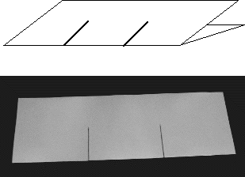

Start with a large sheet of paper, 12 by 18 inches is good and colored paper makes the completed model more interesting.
|  |
The paper sheet folded the long way with two cuts dividing the fold into thirds and going halfway to the opposite side.
Return to A. The Cantor middle thirds set.